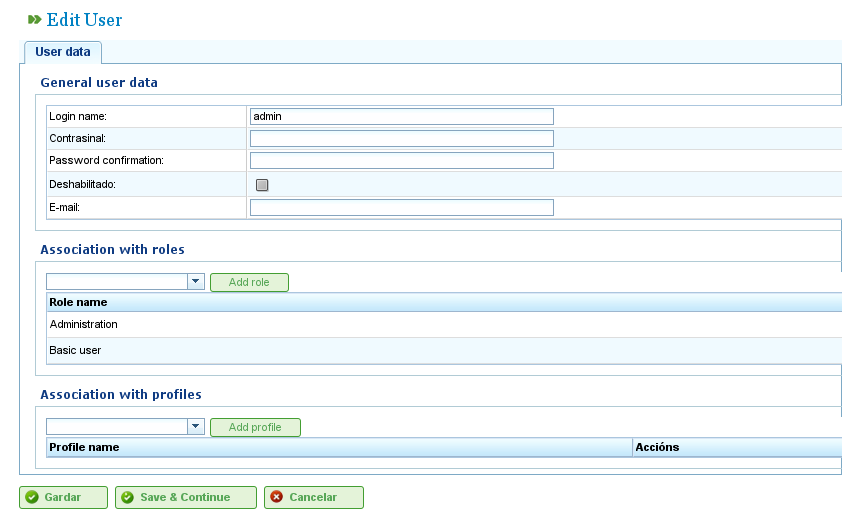

مدیریت کاربران
Contents
مدیریت کاربران
سیستم LibrePlan به مدیران امکان میدهد پروفایلهای کاربری، مجوزها و کاربران را مدیریت کنند. کاربران به پروفایلهای کاربری اختصاص داده میشوند که میتوانند یک سری نقشهای از پیش تعریفشده داشته باشند که دسترسی به ویژگیهای برنامه را اعطا میکنند. نقشها مجوزهای تعریفشده در LibrePlan هستند. نمونههایی از نقشها عبارتند از:
- مدیریت: نقشی که باید به مدیران اختصاص داده شود تا بتوانند عملیات اداری انجام دهند.
- خواننده سرویس وب: نقشی که کاربران برای مشاوره خدمات وب برنامه نیاز دارند.
- نویسنده سرویس وب: نقشی که کاربران برای نوشتن داده از طریق خدمات وب برنامه نیاز دارند.
نقشها در سیستم از پیش تعریف شدهاند. یک پروفایل کاربری از یک یا چند نقش تشکیل شده است. کاربران باید نقشهای خاصی داشته باشند تا بتوانند عملیات خاصی را انجام دهند.
به کاربران میتوان یک یا چند پروفایل، یا مستقیماً یک یا چند نقش اختصاص داد که امکان اعطای مجوز خاص یا عمومی را فراهم میکند.
برای مدیریت کاربران، این مراحل را دنبال کنید:
- به «مدیریت کاربران» در منوی «مدیریت» بروید.
- برنامه یک فرم با فهرستی از کاربران نمایش میدهد.
- روی دکمه ویرایش کاربر مورد نظر کلیک کنید یا روی دکمه «ایجاد» کلیک کنید.
- یک فرم با فیلدهای زیر ظاهر میشود:
- نام کاربری: نام ورود کاربر.
- رمز عبور: رمز عبور کاربر.
- مجاز/غیر مجاز: تنظیمی برای فعال یا غیرفعال کردن حساب کاربری.
- ایمیل: آدرس ایمیل کاربر.
- فهرست نقشهای مرتبط: برای افزودن نقش جدید، کاربران باید در فهرست انتخاب به دنبال نقش بگردند و روی «اختصاص» کلیک کنند.
- فهرست پروفایلهای مرتبط: برای افزودن پروفایل جدید، کاربران باید در فهرست انتخاب به دنبال پروفایل بگردند و روی «اختصاص» کلیک کنند.

مدیریت کاربران
- روی «ذخیره» یا «ذخیره و ادامه» کلیک کنید.
مدیریت پروفایلها
برای مدیریت پروفایلهای برنامه، کاربران باید این مراحل را دنبال کنند:
- به «مدیریت پروفایلهای کاربری» در منوی «مدیریت» بروید.
- برنامه فهرستی از پروفایلها نمایش میدهد.
- روی دکمه ویرایش پروفایل مورد نظر کلیک کنید یا روی «ایجاد» کلیک کنید.
- یک فرم در برنامه با فیلدهای زیر ظاهر میشود:
- نام: نام پروفایل کاربری.
- فهرست نقشها (مجوزها): برای افزودن نقش به پروفایل، کاربران باید یک نقش از فهرست نقش انتخاب کرده و روی «افزودن» کلیک کنند.

مدیریت پروفایلهای کاربری
- روی «ذخیره» یا «ذخیره و ادامه» کلیک کنید و سیستم پروفایل ایجاد یا اصلاح شده را ذخیره میکند.